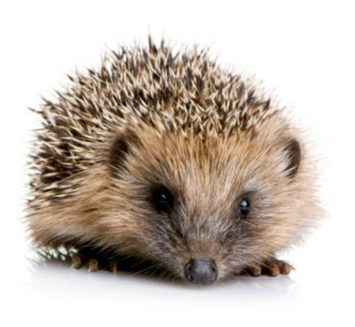

e-mail: timebird@yandex.ru, telegram: @andreqwert Что я люблю в минимализме — так это быстроту. Засчёт отсутствия дизайнерских изысков сайт работает крайне быстро - это радует. :)  Смотрите, ёжик забежал!